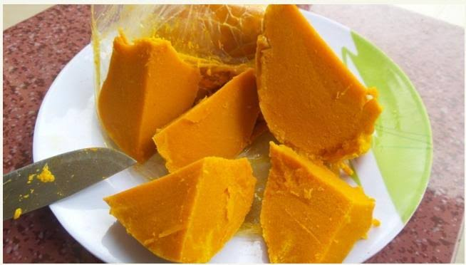

Okpa nsukka

Description
Okpa is special type of igbo food that is made with grain beans. It is a student saviour in UNN. It can be pap, garri, moimoi etc
Ingredients
- Powder grain beans
- Paim oil
- Pepper
- Uzuza
- Salt
- Hot water
Steps
- Pour some quantity of powdered grain beans inside a bowel add all ingredients
- Add palm oil and turn it with hot water untill it is watery
- Tie it inside white leather and put back inside pot with hot water
- Boil untill it is congil